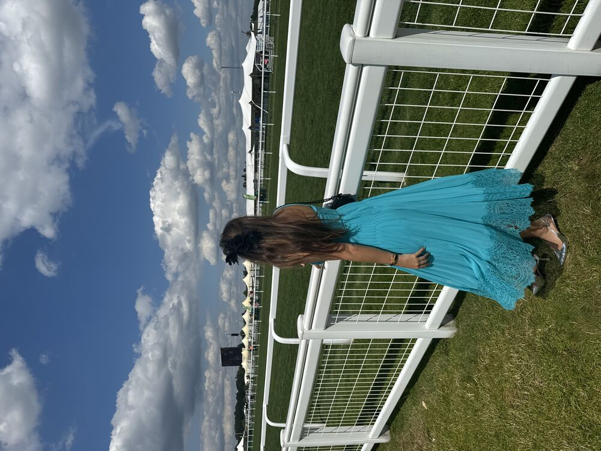
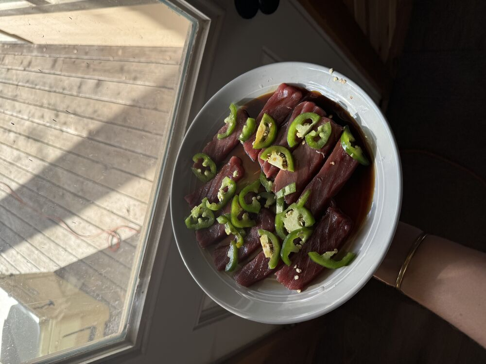
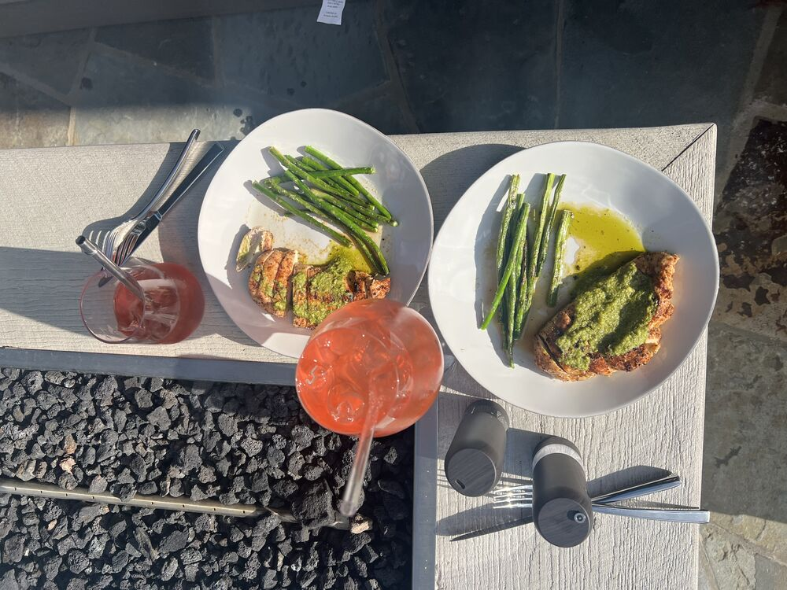
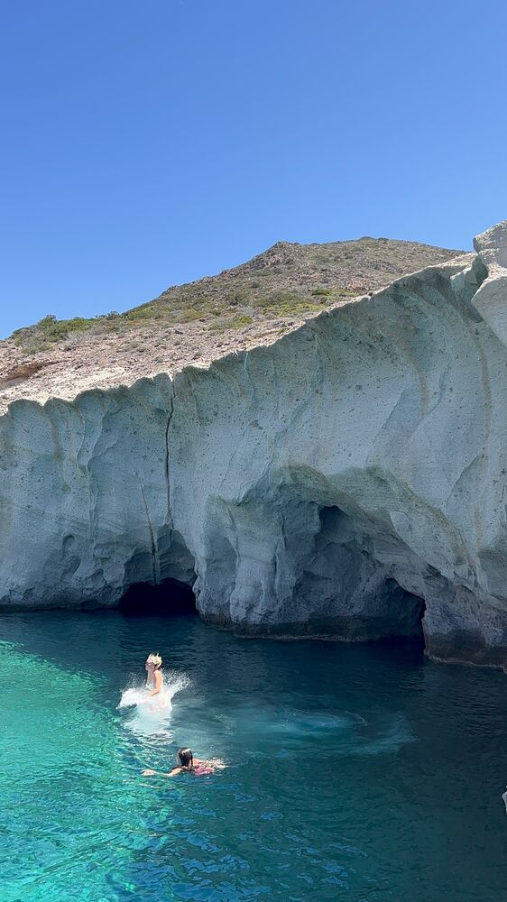

A Short (Professional) Biography
A little about me.
I'm Bella Stryker. I work in luxury resale in the San Francisco Bay Area, as an Associate Luxury Resales Advisor at The RealReal — a concierge role that sits squarely between relationship-building and territory math.
Resale is where my two degrees meet. Fashion Media gives me the eye to talk product, provenance, and design with consignors. Economics with Financial Applications gives me the head for pricing, sell-through, and the mechanics of a circular market.
Before this I worked across early-stage and established brands — building inventory infrastructure for a luxury swim house, leading digital and editorial strategy for SMU's independent fashion publication, running realtor acquisition for a Boston logistics marketplace, and contributing to client placement at ModusBPCM in London.
I'm most interested in the work behind the work — the systems, structures, and decisions that let a brand grow in a way that's both intentional and scalable.
- Education
- SMU, 2026
- B.S. Economics with Financial Applications · B.A. Fashion Media
- Based
- Bay Area, CA
- Raised in Northern California
View Resume →
What I Bring
Four things
that stay true.
Self-Starter
I led a full website redesign for LOOK, SMU's student fashion magazine — chose the CMS, taught myself the build, and shipped it across six sections and fifteen-plus sub-categories.
I Build Efficient Systems
At a luxury swimwear brand I ran an ABC analysis on 2,000+ SKUs, reorganized the inventory room around it, and built a recurring quarterly workflow the founders still use. Targeted campaigns on the aging stock drove roughly 30–40% sell-through within weeks.
Life-Long Learner
I use AI tools daily to work faster and sharper, with an emphasis on not compromising quality to do it.
Left Brain + Right Brain
I think in two modes. Fashion Media gives me the eye to talk product and design with clients; Economics gives me the head for quota, pricing, and territory math.
A Short (Unprofessional) Biography
Off the clock.
I grew up in Northern California, where being outside was just part of daily life — and it's something I've carried with me since. I'm a twin. I went to school in Texas and studied abroad in London twice, but I've always been drawn back to places that are warm, sunny, and easy to spend time in.
I hike whenever I can, and I'm usually either planning a trip or just back from one. I cook farm-to-table when I'm home, and I keep a garden that is probably too ambitious for one person.
I'm also always trying new restaurants and keeping a running list of places to go. If you want proof — find me on Beli as @isabellastryker.

Attending the Royal Ascot in London, UK
Homemade tuna sashimi. Freshly caught. 10/10
Homemade pesto w/ grilled chicken and lemon asparagus
Cliff jumping in Greece